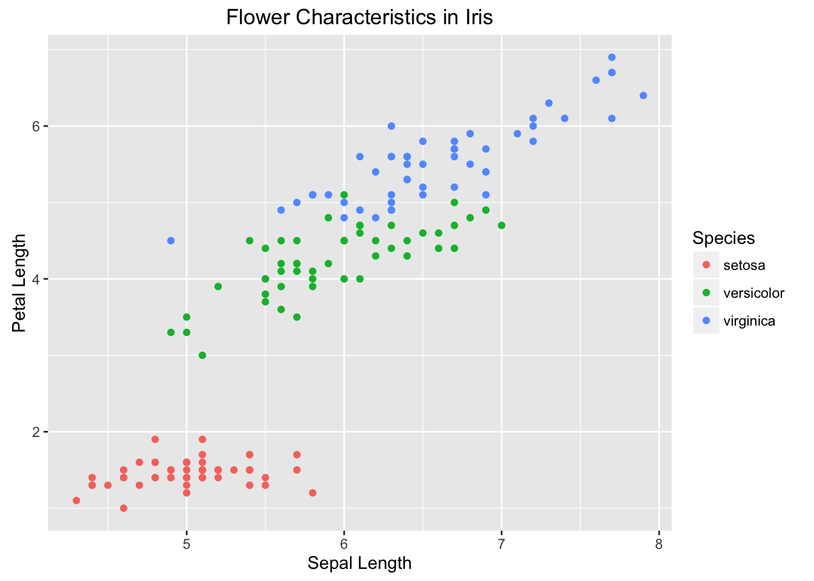

Interactive Data Vizualization Comparison
Jasmine Dumas
April 7th 2016
library(knitr)
library(rmarkdown)
suppressPackageStartupMessages(library(googleVis))base
plot(iris$Sepal.Length, iris$Petal.Length, # x variable, y variable
col = iris$Species, # colour by species
pch = 16, # type of point to use
cex = 1, # size of point to use
xlab = "Sepal Length", # x axis label
ylab = "Petal Length", # y axis label
main = "Flower Characteristics in Iris") # plot title
legend (x = 4.5, y = 7, legend = levels(iris$Species), col = c(1:3), pch = 16)
ggplot2
library(ggplot2)## Warning: package 'ggplot2' was built under R version 3.2.4gg <- ggplot(iris) +
geom_point(aes(x=Sepal.Length, y=Petal.Length, color = Species)) +
labs(title = "Flower Characteristics in Iris", x = "Sepal Length", y = "Petal Length")
gg
ggvis
http://ggvis.rstudio.com/ggvis-basics.html
#install.packages("ggvis", repos=c("http://rstudio.org/_packages", "http://cran.rstudio.com"))
library(ggvis)
data(iris)
p <- ggvis(iris, x = ~Sepal.Length, y = ~Petal.Length, fill = ~Species)
layer_points(p)googleVis
https://github.com/mages/googleVis#googlevis
library(googleVis)
op <- options(gvis.plot.tag='chart')
#
df=data.frame(country=c("US", "GB", "BR"),
val1=c(10,13,14),
val2=c(23,12,32))
Line <- gvisLineChart(df)
# # plot(Line)
# M <- gvisMotionChart(Fruits, 'Fruit', 'Year',
# options=list(width=400, height=350))
# plot(M)
options(op)
# iris2 = iris[, c("Sepal.Length", "Petal.Length")]
# i <- sapply(iris2, is.factor)
# iris2[i] <- lapply(iris2[i], as.character)
# flower <- gvisScatterChart(iris2)
# plot(flower)rCharts
library(rCharts)
names(iris) = gsub("\\.", "", names(iris))
rPlot(SepalLength ~ SepalWidth , data = iris, color = 'Species', type = 'point')## <iframe src=' Interactive_data_viz_comparison_files/figure-html/unnamed-chunk-6-1.html ' scrolling='no' frameBorder='0' seamless class='rChart polycharts ' id=iframe- chart2de46d53d8c2 ></iframe> <style>iframe.rChart{ width: 100%; height: 400px;}</style>plotly
library(plotly)
data(iris)
plot_ly(iris, x = Sepal.Length, y = Sepal.Width, color = Species, mode = "markers")ggploty
p <- ggplot(iris) +
geom_point(aes(x=Sepal.Length, y=Sepal.Width, color = Species))
(gg <- ggplotly(p))